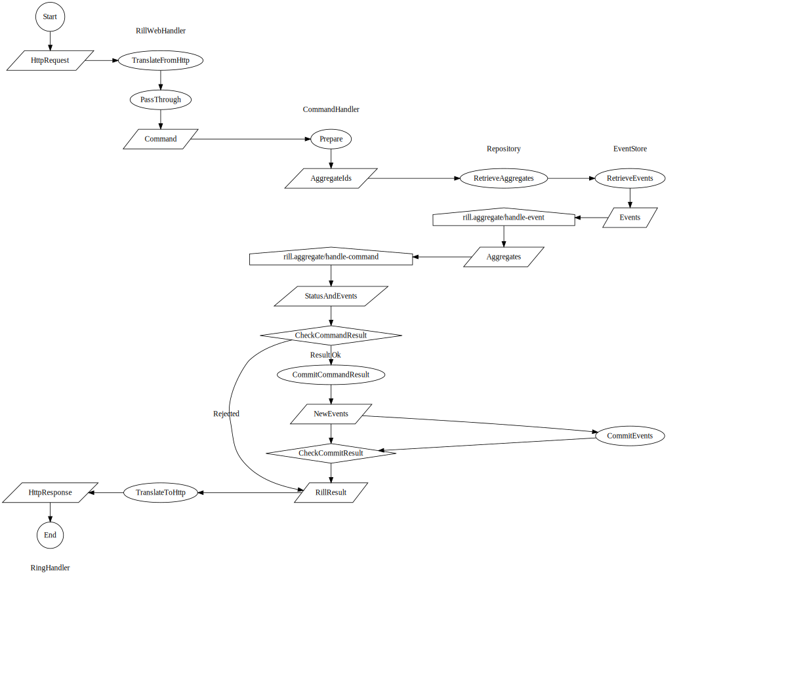

Rill Event Sourcing Documentation
Table of Contents
1 Generating events
Rill is designed to handle 2 concerns: storing and retrieving events (implemented in the EventStore protocol) and generating new events based on incoming commands and current system state (system state is represented as aggregates generated from the existing events by the Repository protocol).
The below diagram outlines the mechanism when rill.web is used to translate command results to ring HTTP responses.

This diagram leaves out notification of observers.